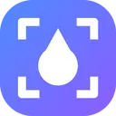
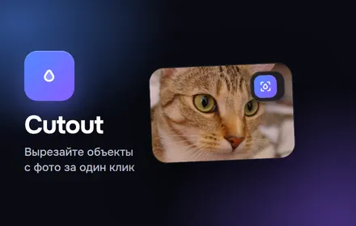
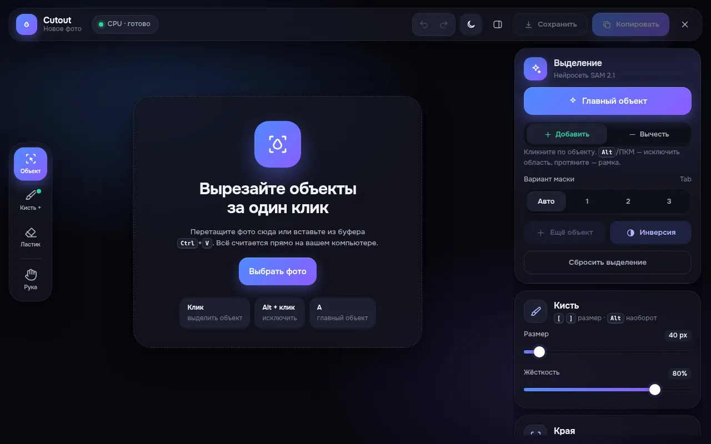
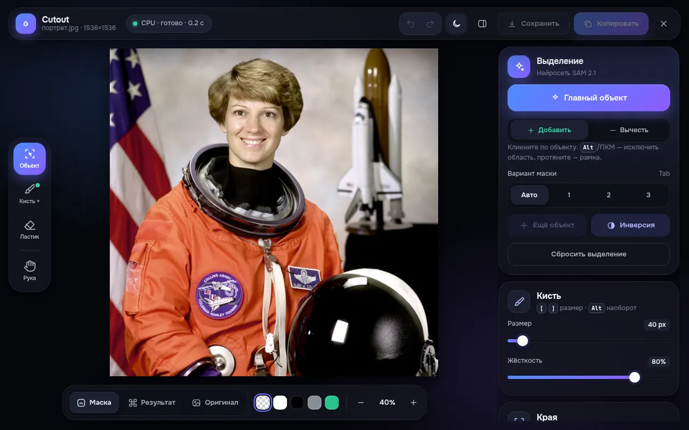
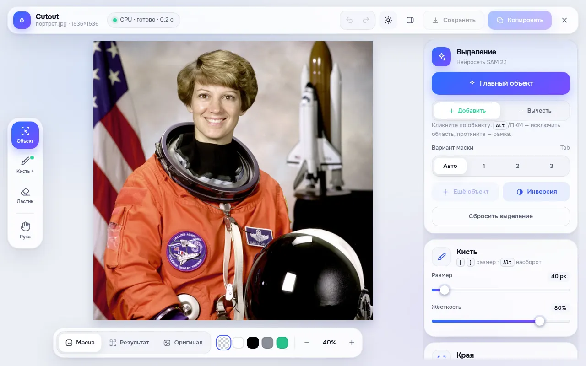
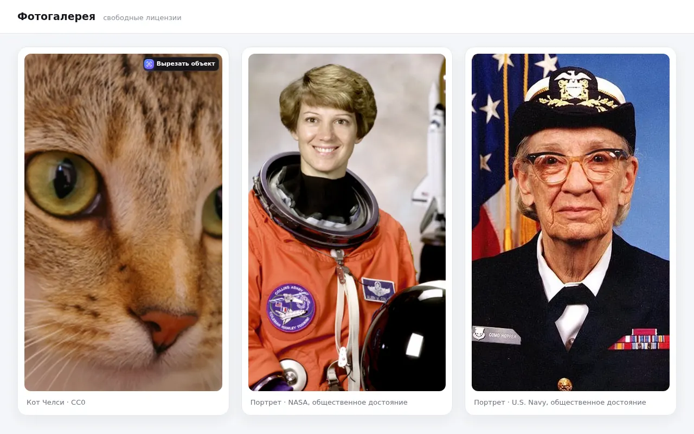
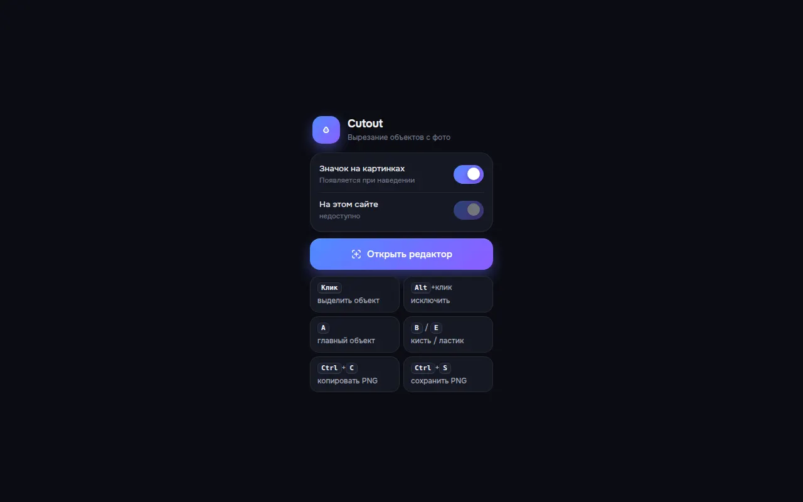
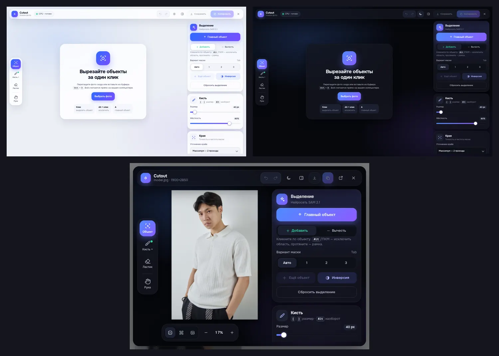

Инструменты — личные проекты
Веб-инструменты и расширение Chrome, которые сделал для себя и использую в работе: вырезка фона, кадрирование и сжатие фото и видео, подготовка товарных карточек.
Cutout
Личный проект: расширение Chrome, которое сделал для себя, — вырезает объекты с фото в один клик нейросетью SAM 2.1 прямо в браузере. Опубликовано в Chrome Web Store.








CROPPER и v/cropper
Два веб-инструмента без сервера: CROPPER — кадрирование и экспорт изображений с логотипом и рамкой; v/cropper — обрезка и сжатие видео под точный вес файла с очередью, обложкой для Telegram/Instagram и встроенной инструкцией. Сделаны для себя и используются в работе в Terra Pro (THE ONE).
p/card
Веб-инструмент для подготовки товарных карточек: совмещение товара с фоном и тенью, цветокор, подгонка под эталон. Сделан для себя и используется в работе в Terra Pro (THE ONE).
Есть похожая задача?
Контакты появятся здесь в ближайшее время.